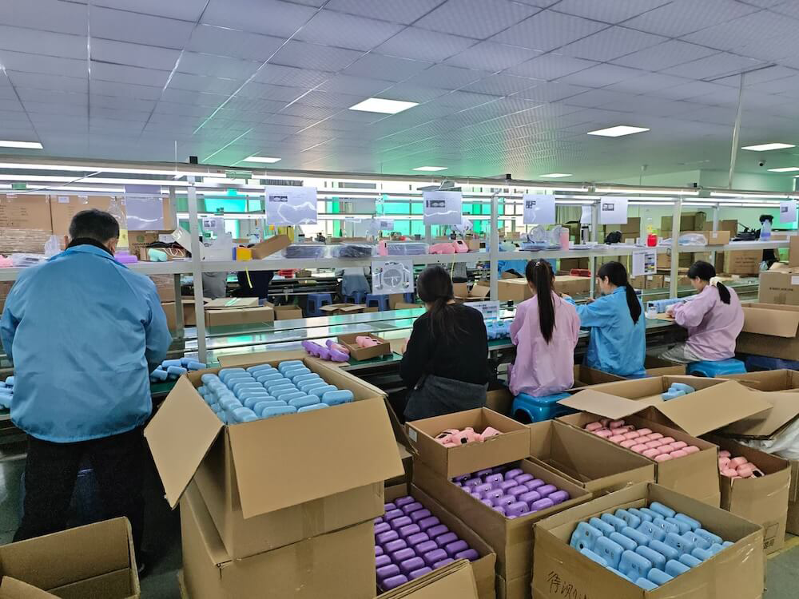
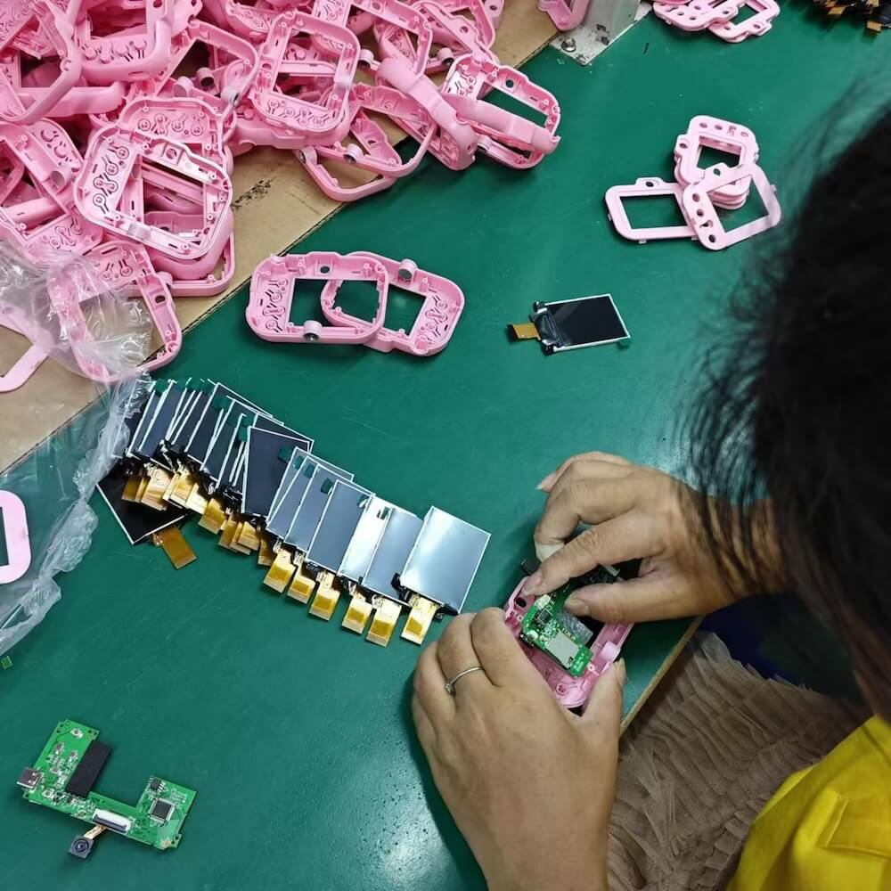
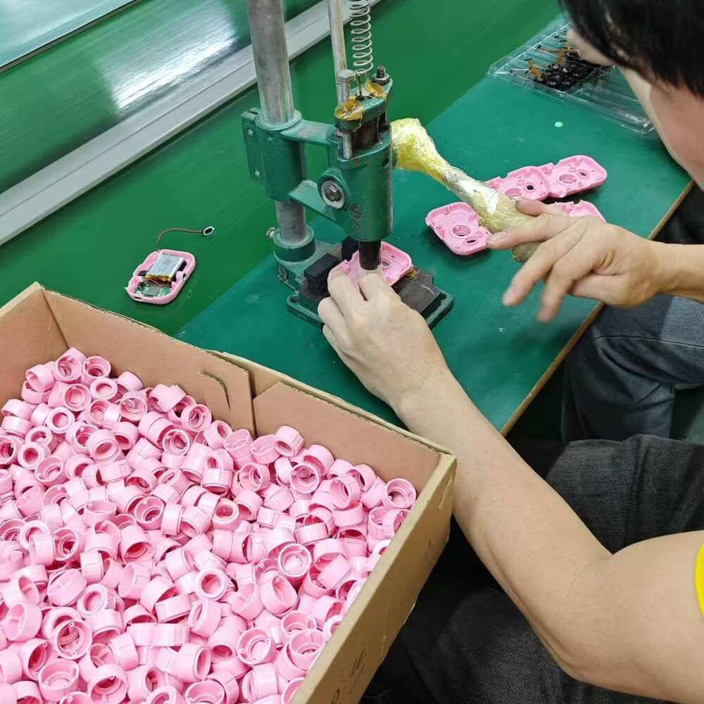

Founded
2018

Shenzhen Bateja Technology Co., Ltd. (深圳市百特佳科技有限公司) designs and produces kids cameras and instant-print cameras at Dahong High tech Park, Bao’an District, Shenzhen.
The site covers 5,000 ㎡, with 200+ people. Quality management is ISO 9001:2015. The stated defect rate is 0.4%. Custom production is the main business. A sample comes first, and small batches start at 10 pieces.
2018
200+
5,000 ㎡
0.4%
Custom work for your brand, then a sample, then a run from 10 pieces.
Logo, color, packaging, housing, startup screen, UI, or new tooling. If you cover the cost, the factory can build it.
Approve the sample before a larger run. Sample cost and lead time are confirmed with the sales team.
The quality system is ISO 9001:2015. The stated defect rate is 0.4%.
Instant-print cameras, kids digital cameras, CCD and flip-screen models, and small kids electronics.
Europe, the United States, Japan, and Korea.
Dahong High tech Park, Bao’an District, Shenzhen. About 200 people work on this site.
Models change as new designs are released. The four lines stay.
Thermal or color print, character designs, and cases. Branding and packaging can be customized.
Thumb cameras, dual lenses, phone-shaped designs, and character themes.
Higher-specification cameras for gifts and specialty listings.
Video walkie-talkies and other small electronics.
Our aim
Quality management certified to ISO 9001:2015. Defect rate 0.4%. Other certificates are added only when the document is issued to Shenzhen Bateja Technology Co., Ltd.
WhatsAppDahong High tech Park, Bao’an District, Shenzhen. Design, sampling, production, and pre-shipment checks happen here.



